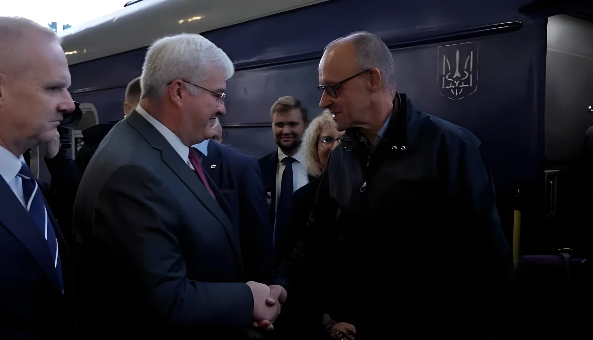

Dimanche 4 octobre 2026, le chancelier Friedrich Merz est arrivé à Kiev en train spécial, accompagné de la ministre de l'Économie Katherina Reiche et de dix chefs d'entreprise de l'armement et de l'énergie. Accueilli à la gare par le ministre ukrainien des Affaires étrangères Andrii Sybiha, il a annoncé de nouvelles aides et assisté à la signature d'accords de coopération industrielle, pendant que la capitale subissait de nouvelles frappes russes.
Dimanche matin, le train spécial du chancelier s'est arrêté en gare centrale de Kiev, sur un quai où l'attendait Andrii Sybiha. Le voyage n'avait pas été annoncé, comme c'est la règle pour les déplacements de dirigeants étrangers dans un pays en guerre. Friedrich Merz était accompagné de Katherina Reiche, ministre fédérale de l'Économie, et de dix dirigeants d'entreprises allemandes, dont des représentants de Siemens Energy, Hensoldt, Diehl Defence et Quantum Systems.
Peu après son arrivée, les sirènes ont retenti. Selon le maire Vitali Klitschko, un pont situé à environ quatre kilomètres de la gare a été touché, et des débris de drone ont endommagé un immeuble d'habitation. La veille, la diplomatie russe avait mis en garde les étrangers et les diplomates contre tout séjour à Kiev, en menaçant de « frappes de représailles massives » ; les ambassadeurs allemand et de l'Union européenne ont fait savoir qu'ils resteraient sur place.
| Acteur | Rôle dans la visite |
|---|---|
| Friedrich Merz | Chancelier fédéral (CDU), à l'initiative du déplacement |
| Katherina Reiche | Ministre fédérale de l'Économie, chef de file de la délégation d'affaires |
| Andrii Sybiha | Ministre ukrainien des Affaires étrangères, accueille la délégation à la gare |
| Volodymyr Zelensky | Président ukrainien, chiffre à 8,5 Md€ les accords signés |
| Vitali Klitschko | Maire de Kiev, rend compte des frappes pendant la visite |
Plus d'une douzaine de documents de coopération sont signés ; Berlin débloque 1 milliard d'euros d'aide militaire et 350 millions d'euros pour l'énergie.
Alerte aérienne ; un pont à environ 4 km de la gare est touché, des débris de drone endommagent un immeuble.
Merz et Reiche sont accueillis à la gare par Andrii Sybiha.
La diplomatie russe met en garde les étrangers contre un séjour à Kiev. Le même jour, Merz assiste à Brême à la fête de l'unité allemande.
Quatre jours après son élection, Merz se rend à Kiev avec Emmanuel Macron, Keir Starmer et Donald Tusk.
Au cœur du déplacement, un volet industriel. Le ministère ukrainien de la Défense s'est entendu avec Diehl sur la livraison de milliers de missiles de défense aérienne IRIS-T et de lanceurs supplémentaires ; Hensoldt doit fournir une technologie satellitaire ; Quantum Systems travaille au développement de drones intercepteurs, attendus pour l'hiver 2026-2027. Selon la presse ukrainienne, quinze contrats ont été signés, portant aussi sur les radars, les robots terrestres et la production de munitions pour systèmes Patriot.
Le volume total reste disputé : Volodymyr Zelensky parle de 8,5 milliards d'euros, des sources gouvernementales allemandes de 6,5 milliards. Des responsables allemands ont par ailleurs évoqué la livraison de 1 000 systèmes d'interception de nouvelle génération contre les drones Shahed à réaction. Zelensky a résumé la logique de l'opération : l'Allemagne aide l'Ukraine pendant la guerre, et l'Ukraine passe désormais des commandes qui créent des débouchés pour les entreprises allemandes.
« Wenn Russland nicht gestoppt wird, richtet sich seine Kriegsmaschinerie früher oder später gegen uns. » (« Si la Russie n'est pas arrêtée, sa machine de guerre se retournera tôt ou tard contre nous. »)
— Friedrich Merz, Kiev, 4 octobre 2026Le calendrier compte autant que les montants. Moscou a multiplié ces derniers jours les frappes contre les ponts sur le Dniepr et les infrastructures énergétiques, à l'approche de l'hiver. Les 350 millions d'euros annoncés doivent servir à réparer le réseau électrique, tandis que les drones intercepteurs et les missiles IRIS-T visent à protéger villes et centrales des attaques aériennes.
Le voyage de 2025 avait montré l'unité des Européens ; celui de 2026 exhibe autre chose : des chefs d'entreprise dans le train du chancelier. En faisant de l'Ukraine un client et un laboratoire pour l'industrie de défense allemande, Merz lie la sécurité de Kiev à l'intérêt économique de l'Allemagne, et répond d'avance à ceux qui voient dans l'aide une simple dépense. Reste à savoir si ces contrats arriveront à temps pour l'hiver, et si l'opinion allemande, divisée, suivra.
Am Sonntag, den 4. Oktober 2026, ist Bundeskanzler Friedrich Merz mit einem Sonderzug in Kiew eingetroffen, begleitet von Wirtschaftsministerin Katherina Reiche und zehn Unternehmern aus der Rüstungs- und Energiebranche. Am Bahnhof vom ukrainischen Außenminister Andrij Sybiha empfangen, kündigte er neue Hilfen an und erlebte die Unterzeichnung industrieller Kooperationen, während die Hauptstadt erneut von russischen Angriffen getroffen wurde.
Am Sonntagmorgen fuhr der Sonderzug des Kanzlers in den Kiewer Hauptbahnhof ein, wo Andrij Sybiha ihn auf dem Bahnsteig erwartete. Die Reise war nicht angekündigt worden, wie es bei Besuchen ausländischer Regierungschefs in einem Kriegsland üblich ist. Friedrich Merz wurde von Katherina Reiche, der Bundeswirtschaftsministerin, und von zehn Unternehmensvertretern begleitet, darunter Siemens Energy, Hensoldt, Diehl Defence und Quantum Systems.
Kurz nach der Ankunft heulten die Sirenen. Nach Angaben von Bürgermeister Witali Klitschko wurde eine Brücke rund vier Kilometer vom Bahnhof entfernt getroffen, Drohnentrümmer beschädigten ein Wohnhaus. Am Vortag hatte das russische Außenministerium Ausländer und Diplomaten vor einem Aufenthalt in Kiew gewarnt und mit „massiven Vergeltungsschlägen“ gedroht; die deutschen und EU-Botschafter erklärten dennoch, vor Ort zu bleiben.
| Akteur | Rolle beim Besuch |
|---|---|
| Friedrich Merz | Bundeskanzler (CDU), Initiator der Reise |
| Katherina Reiche | Bundeswirtschaftsministerin, führt die Wirtschaftsdelegation an |
| Andrij Sybiha | Ukrainischer Außenminister, empfängt die Delegation am Bahnhof |
| Wolodymyr Selenskyj | Ukrainischer Präsident, beziffert die Abkommen auf 8,5 Mrd. € |
| Witali Klitschko | Bürgermeister von Kiew, berichtet über die Angriffe während des Besuchs |
Mehr als ein Dutzend Kooperationsdokumente werden unterzeichnet; Berlin gibt 1 Milliarde Euro Militärhilfe und 350 Millionen Euro für Energie frei.
Luftalarm; eine Brücke rund 4 km vom Bahnhof wird getroffen, Drohnentrümmer beschädigen ein Wohnhaus.
Merz und Reiche werden am Bahnhof von Andrij Sybiha empfangen.
Das russische Außenministerium warnt Ausländer vor einem Aufenthalt in Kiew. Am selben Tag nimmt Merz in Bremen am Tag der Deutschen Einheit teil.
Vier Tage nach seiner Wahl reist Merz mit Emmanuel Macron, Keir Starmer und Donald Tusk nach Kiew.
Im Zentrum der Reise stand ein industrieller Teil. Das ukrainische Verteidigungsministerium einigte sich mit Diehl auf die Lieferung von Tausenden IRIS-T-Luftabwehrraketen und zusätzlichen Startern; Hensoldt soll Satellitentechnik liefern; Quantum Systems arbeitet an der Entwicklung von Abfangdrohnen, die für den Winter 2026/27 erwartet werden. Laut ukrainischen Medien wurden fünfzehn Verträge unterzeichnet, unter anderem zu Radaren, Bodenrobotern und der Produktion von Munition für Patriot-Systeme.
Das Gesamtvolumen bleibt umstritten: Wolodymyr Selenskyj spricht von 8,5 Milliarden Euro, deutsche Regierungskreise von 6,5 Milliarden. Deutsche Regierungsvertreter nannten zudem die Lieferung von 1.000 neu entwickelten Abfangsystemen gegen strahlgetriebene Shahed-Drohnen. Selenskyj fasste die Logik zusammen: Deutschland helfe der Ukraine im Krieg, und die Ukraine erteile nun Rüstungsaufträge, die für deutsche Unternehmen Chancen schaffen.
„Wenn Russland nicht gestoppt wird, richtet sich seine Kriegsmaschinerie früher oder später gegen uns.“
— Friedrich Merz, Kiew, 4. Oktober 2026Der Zeitplan zählt ebenso wie die Summen. Moskau hat in den vergangenen Tagen vermehrt Brücken über den Dnipro und Energieinfrastruktur angegriffen, kurz vor dem Winter. Die angekündigten 350 Millionen Euro sollen zur Reparatur des Stromnetzes dienen, während Abfangdrohnen und IRIS-T-Raketen Städte und Kraftwerke vor Luftangriffen schützen sollen.
Die Reise von 2025 hatte die Einigkeit der Europäer demonstriert; die von 2026 zeigt etwas anderes: Unternehmer im Zug des Kanzlers. Indem Merz die Ukraine zum Kunden und zum Testfeld der deutschen Rüstungsindustrie macht, verknüpft er die Sicherheit Kiews mit dem wirtschaftlichen Interesse Deutschlands und kontert im Voraus jene, die in der Hilfe bloß eine Ausgabe sehen. Offen bleibt, ob die Verträge rechtzeitig zum Winter wirken und ob die gespaltene deutsche Öffentlichkeit folgt.